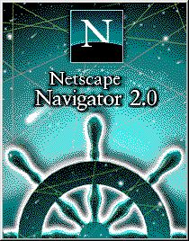

no. 5| 05.11.2014 |
Why is JavaScript so popular in Web Development?
Remember this?
I know. I might as well ask if you remember your own birth.
Way back in 1995, Netscape Communications introduced JavaScript to the mass market with the beta release of version 2.0 of their web browser, Netscape Navigator. JavaScript was written by Brendan Eich in something like 5 weeks (if Silicon Valley legend is to be believed) and pretty much went straight into the wild. Which is why it's both impressive and horrible. No one could have predicted that it would become the world's most used programming language — there might have been some refinements made. But at that time the web was a wild frontier, and Netscape was battling it out with Microsoft to see who would be sheriff of browsertown. Netscape saw a programmable browser as a way around Microsoft's OS dominance, and there was a lot of pressure to get something to market asap.
Oh, and another thing: these were also the dark days of dial up. The Internet was still a fairly newfangled thing, and the only way to get access outside of a university or corporate setting was to sign up with an ISP, buy a modem, and try and shove all your data over your existing telephone line — essentially as audio tones. This was a miracle. A barbarically slow miracle. Imagine having all your fingers chopped off. Now send a text message from your smartphone with your knees. Yep. It was even slower than that.
The introduction of JavaScript meant web developers could add functionality to web pages on the client side. Typically, any updates to the browser window — the user interface of the web — meant refreshing the whole thing, downloading a bunch of data from the server over a slow connection. Not the best experience. Client-side programmablity meant the browser could react to some kinds of user feedback on its own. Eventually, techniques were developed that let the browser move data back and forth from the server to update just parts of web pages, rather than the whole thing every time. This made things seem faster, more sophisticated and laid the groundwork for todays full blown web apps.
There were lots of competing ideas for programmable browsers, and there's a strong argument to be made that JavaScript's popularity was a matter of right place right time. Netscape's popularity helped get JavaScript on millions of desktops, and Microsoft had to support it in their browser because they were the underdog in the race at that time. This meant that if you were a web developer that wanted to do some kind of work on the client side, you'd likely go for Java Script because you wouldn't have to depend on your user downloading some other thing. Like a plug in, or some kind of compiler or something. As more sites started using JavaScript things snowballed, and now there's a whole universe of frameworks (like jQuerry) based on JavaScript that are used to make super badass web apps that feel ever closer to the apps we use on our phones, tablets and desktops.
Someday something better will come along, but JavaScript has a lot of traction at this point. We're going to be working with it for a while. It's made the web more fun, more useful, and much more sophisticated. So thanks for that JS! Now pardon me while I go read about global namespace.